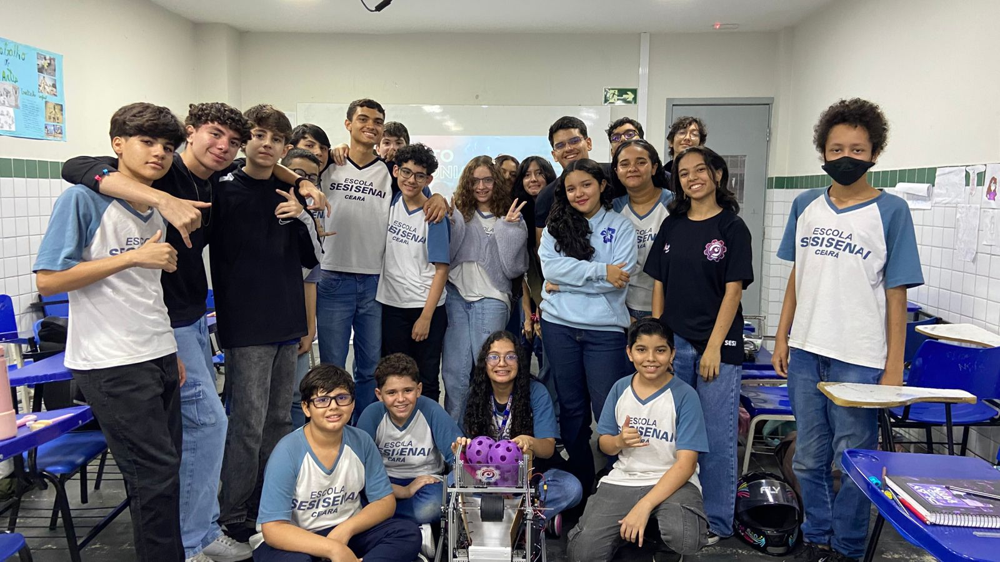
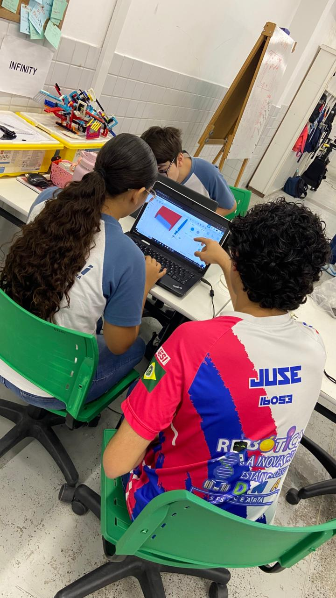

Iniciativas que fazem a diferença na comunidade

O Projeto Harmonia é uma iniciativa da Cluster 16053 que tem como objetivo levar a robótica de forma acessível e inclusiva para crianças e adolescentes. Através de atividades práticas, oficinas e contato direto com a tecnologia, o projeto busca despertar o interesse pelo STEM, mostrando que a robótica pode ser simples, divertida e ao alcance de todos, independentemente da realidade social.
Crianças Impactadas
Oficinas Realizadas
Sonhos Inspirados

Acreditamos no poder da colaboração e no compartilhamento de conhecimento. Por isso, desenvolvemos um programa de apadrinhamento para equipes da FIRST Lego League (FLL), ajudando novos times a dar seus primeiros passos na robótica competitiva.
Oferecemos suporte técnico, orientação estratégica e mentoria para que essas equipes possam desenvolver seus robôs e projetos de inovação, compartilhando nossa experiência e paixão pela robótica.
Equipes fazem parte do programa
Nossos projetos só são possíveis graças ao apoio de patrocinadores e voluntários. Quer fazer parte dessa transformação?
Seja um Apoiador